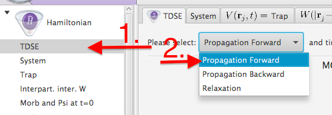
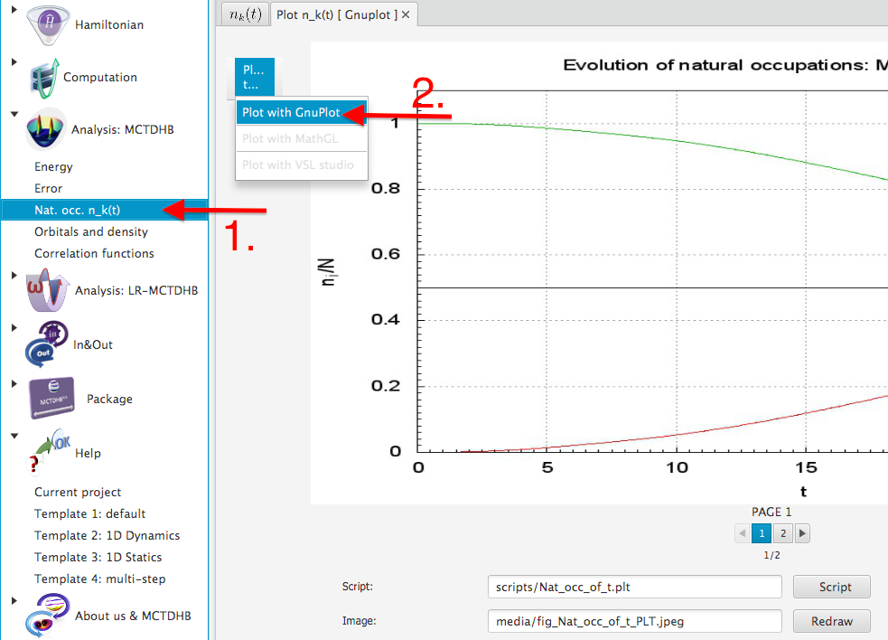
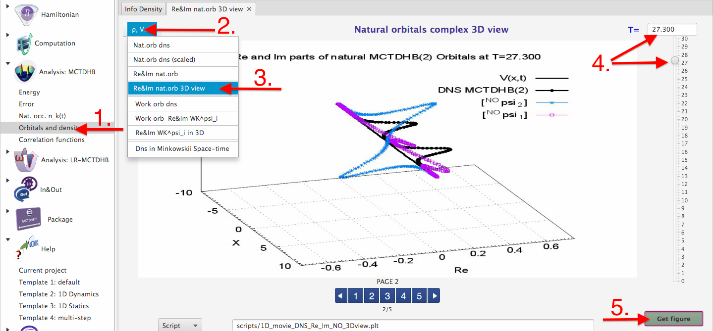
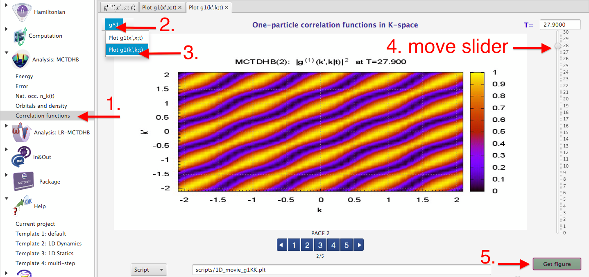

The main goal of the MCTDHB-Lab project with Template.2 is to reproduce some results from Fig.2 and Fig. 3 of the manuscript (see below) published in
PRL 106, 240401 (2011):
1) Verify that:
a) all the parameters of the Hamiltonian are correct
click on "Hamitonian"->"System"->"N"-button (similarly for Trap V(x)=0, strength of the interaction lambda, etc.)
b) TDSE is solved for propagation, i.e., you are looking for time-evolution of the initial state
click on "Hamiltonian"->"TDSE" push on the "Propagation Forward"-button

2) Run MCTDHB (click on "Computation"->"Run MCTDHB"->"Run"->"Ok"-button), wait till it is finished
click on "Refresh"-button or on "Project Status"-button in the left bottom corner of the MCTDHB-Lab window
3) Compare the behavior of the natural occupation numbers with the reference ones, depicted in upper left panel of Fig.2
click on "Analysis: MCTDHB"->"Nat. occ. n_k(t)"->"Plot n_k(t)"->"Plot with GnuPlot"
as result figure scripts/Nat_occ_of_t.jpeg will be generated

4) Compare the behavior of the natural orbitals at time-slice T=27.9 with the reference ones, depicted in lower left panel of Fig.2
click on "Analysis: MCTDHB"->"Orbitals and density"->"rho V..."->"Re&Im nat orb 3D view"
push the slider at the right part of the window till desired time slice (here T=27.3) and click on "Get figure"

5) Compare the behavior of the one-body correlation functions in k- and x-spaces at time-slices T=0 and T=27.9
with the reference ones, depicted in Fig. 2
a) click on "Analysis: MCTDHB"->"Correlation functions"->"Plot g1(x’,x;t)"->"Plot g1(x’,x;t)"
move the slider to T=27.9 click "Get figure"
b) click on "Analysis: MCTDHB"->"Correlation functions"->"g^1"->"Plot g1(k’,k;t)"
move the slider to T=27.9, click "Get figure"

Death of soliton trains in attractive Bose-Einstein condensates
Alexej I. Streltsov1, Ofir. E. Alon1, 2, and Lorenz S. Cederbaum1
1 Theoretische Chemie, Physikalisch-Chemisches Institut, Universität Heidelberg,
Im Neuenheimer Feld 229, D-69120 Heidelberg, Germany
2 Department of Physics, University of Haifa at Oranim, Tivon 36006, Israel
Abstract
Experiments on ultra-cold attractive Bose-Einstein Condensates (BECs) have demonstrated that at low dimensions atomic clouds can form localized objects, propagating for long times without significant changes in their shapes and attributed to bright matter-wave solitons, which are coherent objects. We consider the dynamics of bright soliton trains from the perspective of many-boson physics. The fate of matter-wave soliton trains is actually to quickly loose their coherence and become macroscopically fragmented BECs. The death of the coherent matter-wave soliton trains gives birth to fragmented objects, whose quantum properties and experimental signatures differ substantially from what is currently assumed.
03.75.Kk, 03.65.-w, 03.75.Nt, 05.30.Jp
Solitons are common wave-packet phenomena in many areas of science and engineering
[1, 2]. Such localized structures can form when a wave-packet’s dispersion is compensated by self-focusing (attractive) forces. In this context, the physics of low-dimensional attractive Bose-Einstein condensates (BECs) has attracted much attention
[3, 4, 5, 6, 7, 8, 9, 10]. The similarity between the Gross-Pitaevskii (GP) equation
[11, 12] commonly used to describe these ultra-cold quantum systems and the non-linear Schrödinger equation used in optics
[2] to characterize self-focusing of light has encouraged the transfer of ideas, phenomena, and understanding from optics to ultra-cold atomic physics. Particularly, bright matter-wave solitons have been predicted to occur in low-dimensional attractive Bose gases
[3, 4], stimulating the recent experiments
[5, 6].
Very often, along with a single soliton, multi-hump matter-wave structures propagating for long times without significant changes in their shapes have been observed. Since the GP equation supports localized multi-hump solutions as excited states, the experimentally observed multi-hump structures have been attributed to soliton trains, which are coherent objects. This is the current widely accepted interpretation in the literature. Nowadays the GP equation (i.e., the non-linear Schrödinger equation) is the cornerstone of studying soliton trains in attractive BECs.
It is important to remember, however, that ultra-cold attractive BECs are quantum many-particle systems, governed by the many-boson Schrödinger equation. Hence, we consider in this work the dynamics of bright soliton trains from the perspective of many-boson physics. The fate of matter-wave soliton trains is actually to quickly loose their coherence and become macroscopically fragmented BECs
[13, 14, 15]. The death of the coherent matter-wave soliton trains gives birth to fragmented objects, whose quantum properties and experimental signatures differ substantially from what is currently assumed.
Our starting point is the GP dynamics
⎡⎣ − (1)/(2)(∂2)/(∂x2) + λ0(N − 1)|ψ(x, t)|2⎤⎦ψ(x, t) = i(∂ψ(x, t))/(∂t)
of a soliton train with two humps (briefly, two-hump soliton). We consider in this work
N = 2000 bosons in one dimension and attractive inter-particle interaction of strength
λ0 = − 0.002. For convenience, we use dimensionless quantities which are readily arrived at by dividing the dimension-full Hamiltonian by
(ℏ2)/(mL2), where
m is the mass of a boson and
L is a length scale. The corresponding dimension-full quantities are within range of current experimental setups and discussed below. As an initial profile (shape) of the two-hump soliton we take the commonly used linear combination of Sech-shaped functions:
ψ(x, 0) = \calN{sech[γ(x − x0)]± sech[γ(x + x0)]},
where
\calN is the normalization factor. The "+" refers to a
0-phase symmetric and the "-" to a
π-phase anti-symmetric soliton train. The parameter
γ is inversely proportional to the width of the humps. By assuming a large separation between humps, one gets by minimizing the GP energy functional the optimal value of
γ = |λ0|(N − 1) ⁄ 4 ≈ 1.0.
The time-dependent density ρ(x, t) obtained by solving the time-dependent GP equation for different two-hump solitons is plotted in Fig. 1. In the left upper panel, Fig. 1a, we plot the dynamics for the 0-phase symmetric soliton train, initially located at x0 = ±4.0. The system reveals the well known mean-field oscillatory dynamics: the humps attract each other, collide at t ≈ 42, then split and return to the initial separation and start a new cycle of oscillation. The left middle part, Fig. 1b, shows the dynamics for the π-phase anti-symmetric soliton clouds placed initially at a larger separation of x0 = ±6.0. At such a separation the clouds very slightly repel each other, indicating that the inter-hump forces strongly depend on the initial separation. In the left lower panel, Fig. 1c, we depict the dynamics for a 0-phase asymmetric soliton train, formed as the combination of the sech-shaped functions of slightly different widths γ = 1.1 (left cloud) and γ = 0.9 (right cloud), placed at x0 = ±4.0. A similar dynamics to Fig. 1a is seen. The GP theory describes the following characteristics of two-hump solitons: (i) the relative phase between humps defines whether the inter-hump interaction is attractive or repulsive, and (ii) the magnitude of the inter-hump interaction depends on the separation between the humps.
We remind the reader that GP theory is a mean-field approximation to the quantum many-boson problem which assumes all bosons to occupy one and the same quantum state throughout the system’s evolution in time. What happens if we relax the constraint of the attractive system to occupy a single quantum state? In other words, we allow the system to choose according to the variational principle its evolution in time by solving now the time-dependent many-boson Schrödinger equation
i(∂Ψ(t))/(∂t) = ĤΨ(t)
with
Ĥ(x1, …, xN) = N⎲⎳j = 1 − (1)/(2)(∂2)/(∂x2j) + N⎲⎳j < kλ0δ(xj − xk).
It is possible nowadays to go significantly beyond mean-field and compute the dynamics of BECs on the many-body level, by solving the time-dependent many-boson Schrödinger equation with the multiconfigurational time-dependent Hartree method for bosons, see the literature for details
[16, 17] and applications
[18, 19]. Is the dynamics of soliton trains described above to change in a dramatic manner?
We take as initial conditions the same
0-phase symmetric and
π-phase anti-symmetric soliton trains as in the above GP studies and propagate them now not on the mean-field but on the many-body level. The time-dependent density
ρ(x, t) obtained at the many-body level is plotted in the right panels of Fig. 1. The first observation is that the initially-localized wave-packets remain localized at the many-body level of the description as well. Hence, localization is indeed a characteristic dynamical feature of attractive bosonic clouds in one dimension, as predicted at the GP level and confirmed here at the many-body level. The many-body results, however, reveal different dynamics than the mean-field ones, compare the left and right panels of Fig. 1. In the right upper panel, Fig. 1d, we depict the many-body dynamics of the initially-prepared
0-phase symmetric wave-packet. The two separated humps start to attract each other, similarly to the mean-field dynamics, but do not come close enough to collide, as it is in the GP case, Fig. 1a. Instead of the full collision the sub-clouds reach a minimal separation and then they start to depart from each other. This observation reveals, thereby, a repulsive character of the inter-hump interaction. So, during the many-body dynamics the interaction between the humps of the initially-prepared
0-phase symmetric wave-packet changes from attractive to repulsive and stays repulsive afterwards. The many-body dynamics of the initially-prepared
π-phase anti-symmetric wave-packet is shown on the right middle panel, Fig. 1e. Due to the larger separation between the two humps, the spatial density profiles obtained at the many-body and GP levels are indeed very close to each other. The weak repulsive interaction between the humps persists at the many-body level as well. The right lower panel, Fig. 1f, shows the density profile for the
0-phase asymmetric wave-packet constructed, as above, from two functions of slightly different widths. The dynamics obtained at the many-body level for the initially-prepared
0-phase asymmetric wave-packet has a lot in common with the respective many-body dynamics obtained for the initially-prepared
0-phase symmetric wave-packet, compare panel Fig. 1d and Fig. 1f. The sub-clouds start to attract each other and approach some minimal distance, and then the inter-hump interaction becomes of repulsive character. Summarizing, the many-body dynamics shows that irrespective to the phase between initially-prepared humps, after some time the inter-hump interaction changes its nature and becomes repulsive. This conclusion is general and has been checked for various initially-prepared symmetric and asymmetric wave-packets with different phases. This behavior is in accord with the experimental observation that the inter-hump interactions in low-dimensional attractive Bose gases are indeed repulsive. For more analysis of the inter-hump forces see
[20].
The differences between the GP dynamics leading to bright soliton trains and the respective many-body dynamics collected in Fig. 1 show that bright soliton trains in one-dimensional BECs undergo changes in time. We shall see below that these changes are fundamental and dramatic. To get a deeper insight into the physics behind the intriguing many-body results, we examine further the quantum nature of the attractive bosons. First, we perform the natural orbital analysis of the propagating wave-packets at every point of the propagation time by constructing and diagonalizing the reduced one-body density matrix. The reduced one-body density matrix of the system is given by
ρ(1)(x|x’;t) = ⟨Ψ(t)|Ψ̂†(x’)Ψ̂(x)|Ψ(t)⟩,
where
Ψ̂†(x) is the usual bosonic field operator creating a boson at position
x. The eigenvalues obtained, called natural occupation numbers, are plotted in Fig. 2. All initial states, at
t = 0, are fully condensed systems, i.e., only one natural orbital is macroscopically occupied. The GP theory implies that the system remains condensed all the time, i.e., that only one natural orbital remains occupied during the evolution. The many-body dynamics, in contrast, shows that both for the initially-prepared
0-phase soliton train as well as for the
π-phase soliton train the bosons quickly populate the second natural orbital, forming thereby macroscopically (two-fold) fragmented many-boson states. The fate of bright soliton trains is thus death by fragmentation. We note that fragmentation of BECs is a general known and well-studied phenomena in the literature (see
[13, 14, 15] and references therein). For the
0-phase symmetric initial state the fragmentation ratio of
n1 = 63.21%, where the condensed fraction has decreased by
1 − (1)/(e) times, is reached already at
t ≈ 30 (see left upper panel of Fig. 2). Afterwards, the many-body wave-packet dynamics reveals oscillations around the two-fold fragmented state. The
π-phase soliton loses its coherence monotonously and lives a bit longer -- it becomes fragmented at
t ≈ 54 (see right upper panel of Fig. 2). We stress that the changes in the physics are dramatic despite the large separation between the density humps (see Fig. 1e). The lifetime of the
0-phase asymmetric soliton (not shown) discussed above and in Fig. 1 is also
t ≈ 30. We have also found out that increasing the number of atoms in the system and keeping the GP parameter
λ0N fixed, the lifetime of the soliton trains decreases, i.e., the lifetime of the initially-prepared coherent objects becomes even shorter
[20]. The conclusions are that initially coherent two-hump wave-packets become two-fold fragmented with time, and that the resulting coherence lifetime of the two-hump solitons is finite and ultrashort.
We have performed similar many-body propagations of initially coherent three-hump and four-hump soliton trains and found that the dynamics leads to the formation of three-fold and four-fold fragmented many-body states, respectively. Summarizing, the death of multi-hump soliton trains is a generic rapid inevitable feature of the many-body dynamics of attractive bosons in one dimension, and gives birth to a potentially interesting object like the fragmenton
[21], also see
[20]. This result has been obtained for initially coherent states made of different numbers of atoms, different number of the constituting humps, placed at different inter-hump separations, with different inter-hump phases, and of different humps’ widths.
We have shown so far the death of soliton trains as an emerging many-body phenomenon in one dimensional attractive BECs. It is important to discuss how can it be resolved experimentally. Looking at Fig. 1 we recall that on the many-body level the multi-boson attractive wave-packets remain localized objects in real space. This observation, together with the fragmentation of the reduced one-body density matrix, suggest to look for signatures in the correlation functions, both in coordinate and momentum space, which is done in Fig. 3. The first-order correlation function in coordinate space
g(1)(x’, x;t) ≡ (ρ(1)(x|x’;t))/(√(ρ(x, t)ρ(x’, t)))
quantifies the degree of spatial coherence of the interacting system
[22, 23], and analogously
g(1)(k’, k;t) in momentum space
[23]. The upper two panels show the first-order correlation functions in coordinate (left) and momentum (right) space of the initially-prepared coherent
0-phase symmetric soliton train at
t = 0. It should be stressed that, within GP theory, the wave-packet remains coherent at all times; thus the upper two panels represent the first-order correlation functions of the two-hump attractive wave-packet at all times, assuming GP to be valid. In sharp contrast, the first-order correlation functions in coordinate and momentum space, when computed on the many-body level, show prominent structures, see middle and lower four panels in Fig. 3, which leave no place for confusion of the rise of fragmentation
[23] and the death of soliton trains. The respective signatures in the momentum distributions are discussed in
[20].
It is left to determine whether the death of soliton trains is on a time scale relevant for current experimental setups. For this we consider explicitly
N = 2000 7Li atoms (
m = 1.1650⋅10 − 26 kg,
s-wave scattering length is
as = − 3a0). We emulate a quasi-1D cigar-shaped trap in which the transverse confinement is
w⊥ = 2π⋅800 Hz, which is amenable to current experimental setups. Following
[24], the transverse confinement renormalizes the interaction strength. Combining all the above, the length scale is given by
L = (ℏ|λ0|)/(2mω⊥as) = 11.3⋅10 − 6 m, and the time scale by
(mL2)/(ℏ) = 14.2⋅10 − 3 sec. Now, expressing the lifetime of the soliton trains (see Fig. 2) in real time, we get lifetimes of a couple of hundreds of milliseconds (see
[20] for analysis of the lifetime as a fucntion of
N), much below current experimental run times of a couple of seconds
[5]. Our theoretical results thus call for exciting experimental demonstration of the ultrafast death of soliton trains in low-dimensional attractive BECs, caused by fragmentation.
We are grateful to K. Sakmann and H.-D. Meyer for fruitful discussions. Financial support by the DFG is greatly acknowledged.
References
[1] S. Trillo and W. Torruellas (Eds.), Spatial Solitons (Springer, Berlin, 2001).
[2] G. I. Stegeman and M. Segev, Science 286, 1518 (1999).
[3] P. A. Ruprecht, M. J. Holland, K. Burnett, M. Edwards, Phys. Rev. A 51, 4704 (1995).
[4] V. M. Pérez-García, H. Michinel, and H. Herrero, Phys. Rev. A 57, 3837 (1998).
[5] K. E. Strecker, G. B. Partridge, A. G. Truscott, and R. G. Hulet, Nature 417, 150 (2002).
[6] L. Khaykovich et al., Science 296, 1290 (2002).
[7] U. Al Khawaja et al., Phys. Rev. Lett. 89, 200404 (2002).
[8] L. Salasnich, A. Parola, and L. Reatto, Phys. Rev. Lett. 91, 080405 (2003).
[9] L. D. Carr and J. Brand, Phys. Rev. Lett. 92, 040401 (2004).
[10] A. D. Martin, C. S. Adams, and S. A. Gardiner, Phys. Rev. Lett. 98, 020402 (2007).
[11] E. P. Gross, Nuovo Cimento 20, 454 (1961).
[12] L. P. Pitaevskii, Zh. Eksp. Teor. Fiz. 40, 646 (1961) [Sov. Phys.--JETP 13, 451 (1961)].
[13] P. Nozières and D. Saint James, J. Phys. France 43, 1133 (1982).
[14] A. I. Streltsov, O. E. Alon, and L. S. Cederbaum, Phys. Rev. A 73, 063626 (2006).
[15] E. J. Mueller, T.-L. Ho, M. Ueda, and G. Baym, Phys. Rev. A 74, 033612 (2006).
[16] A. I. Streltsov, O. E. Alon, and L. S. Cederbaum, Phys. Rev. Lett. 99, 030402 (2007).
[17] O. E. Alon, A. I. Streltsov, and L. S. Cederbaum, Phys. Rev. A 77, 033613 (2008).
[18] J. Grond, J. Schmiedmayer, and U. Hohenester, Phys. Rev. A 79, 021603(R) (2009).
[19] K. Sakmann, A. I. Streltsov, O. E. Alon, and L. S. Cederbaum, Phys. Rev. Lett. 103, 220601 (2009).
[20] See EPAPS Document No. xxxx for supplemental physical analysis of the death of soliton trains. For more information on EPAPS, see http://www.aip.org/pubservs/epaps.html.
[21] A. I. Streltsov, O. E. Alon, and L. S. Cederbaum, Phys. Rev. Lett. 100, 130401 (2008).
[22] M. Naraschewski and R. J. Glauber, Phys. Rev. A 59, 4595 (1999).
[23] K. Sakmann, A. I. Streltsov, O. E. Alon, and L. S. Cederbaum, Phys. Rev. A 78, 023615 (2008).
[24] M. Olshanii, Phys. Rev. Lett. 81, 938 (1998).